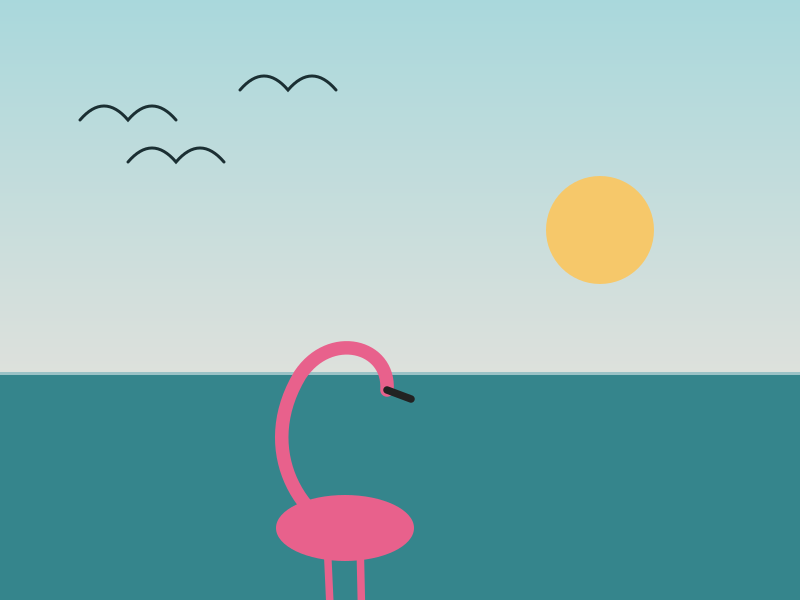
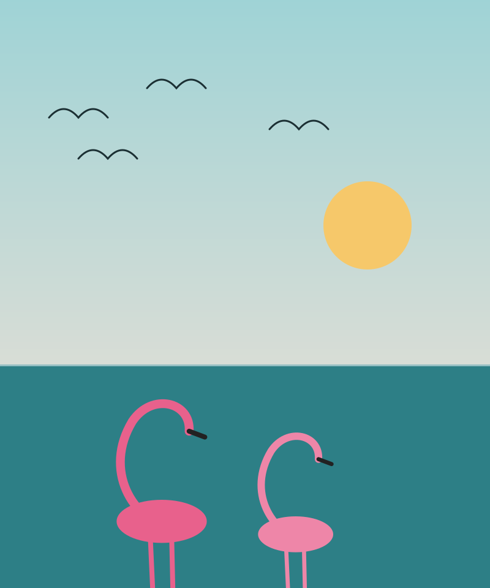
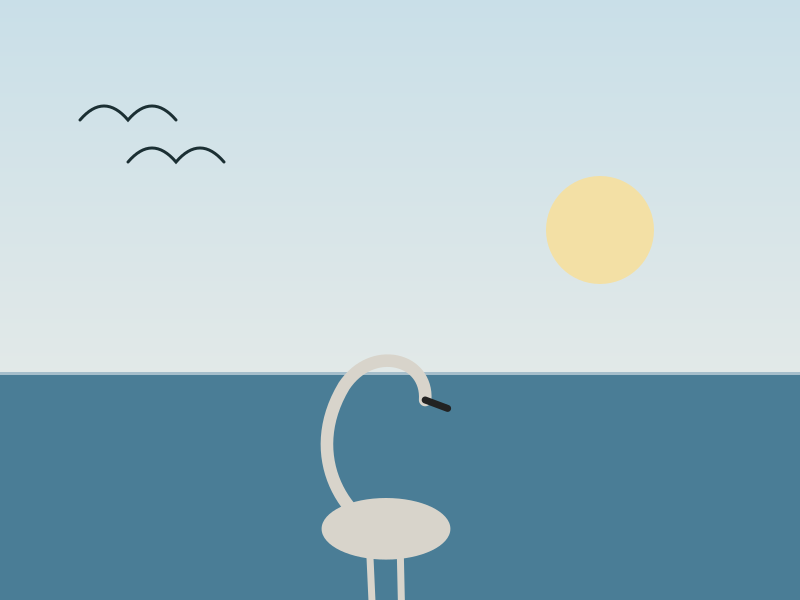
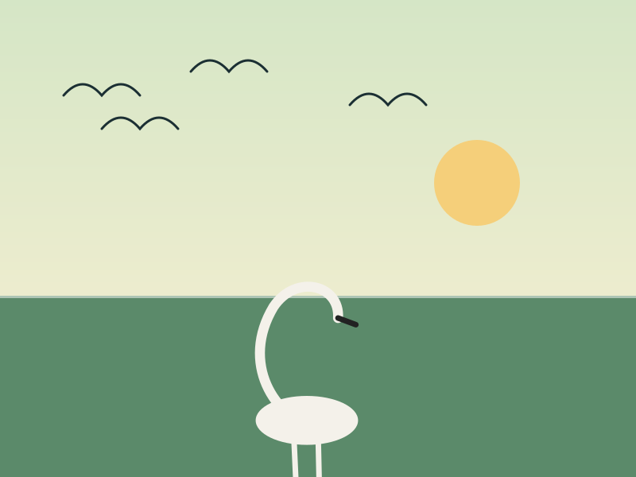
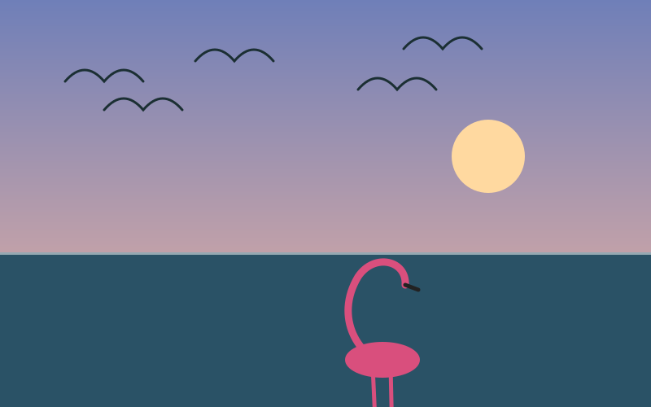
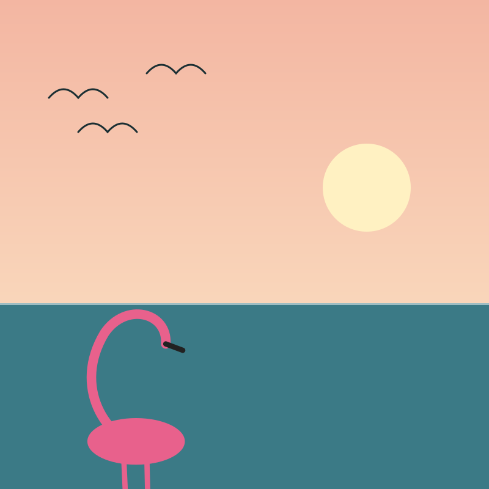

Greater flamingo
Tall, pink and usually in flocks. Look for them feeding with their heads down in the shallows.

A seasonal guide to the waterbirds that visit shallow coastal lagoons: who to look for, when to go and how to plan the day.

Tall, pink and usually in flocks. Look for them feeding with their heads down in the shallows.

A large, pale fishing bird. It often feeds in groups, herding fish toward the shore.

Easy to spot by its long, curved bill. It wades slowly and sweeps the bill through the water.
| Months | What to expect | Best hour |
|---|---|---|
| October–November | First arrivals, smaller groups | 6:00–8:00 am |
| December–February | Peak numbers, large flocks | 6:00–9:00 am |
| March–April | Flocks thin out as birds leave | Early morning |
| May–September | Few visitors, resident birds only | Early morning |


Arrive before sunrise, move slowly and keep your distance. Birds that feel safe stay longer and behave naturally.
Choose a calm morning, check tide and weather the day before, and tell someone where you are going.